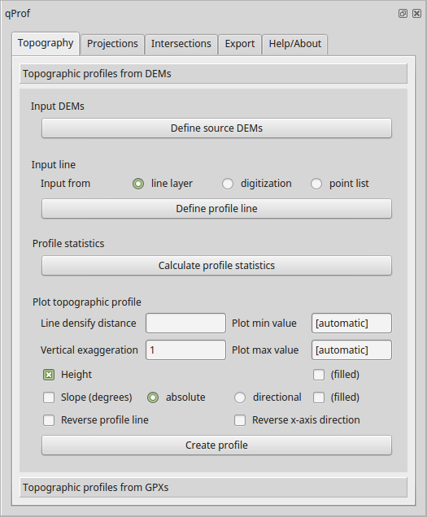
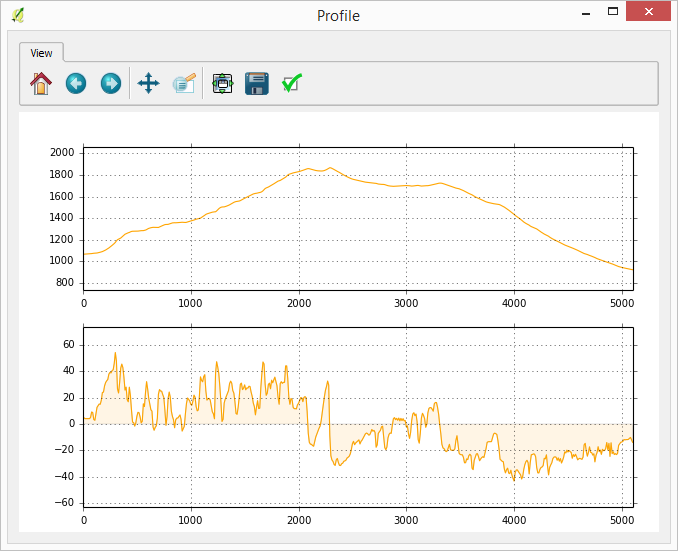
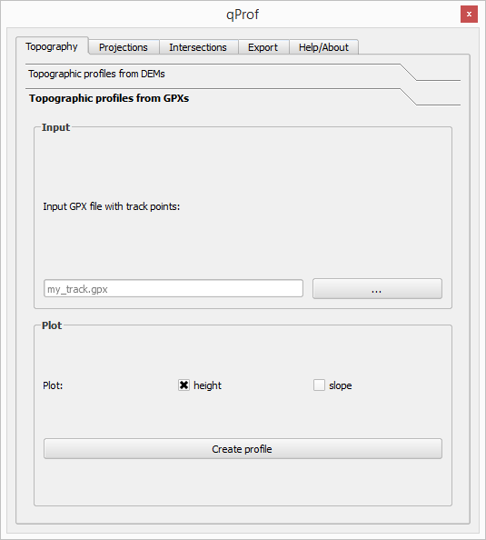
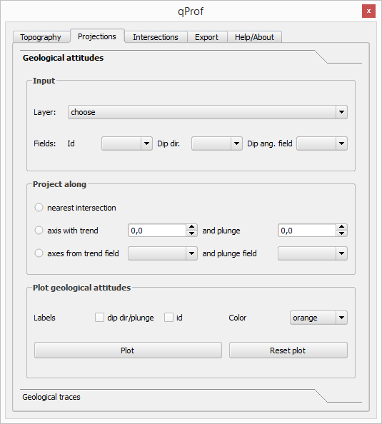
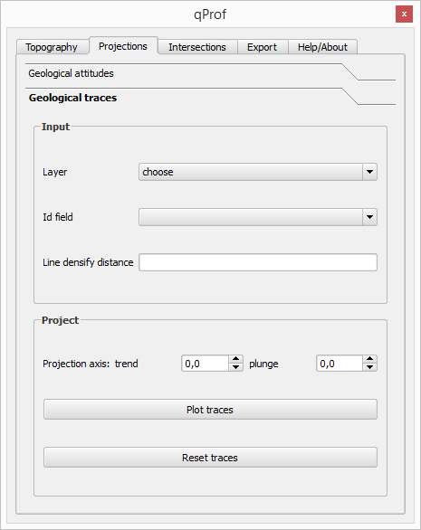
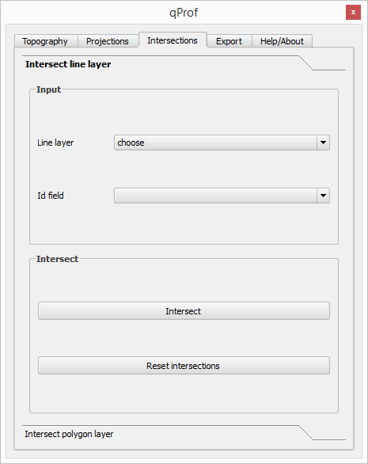
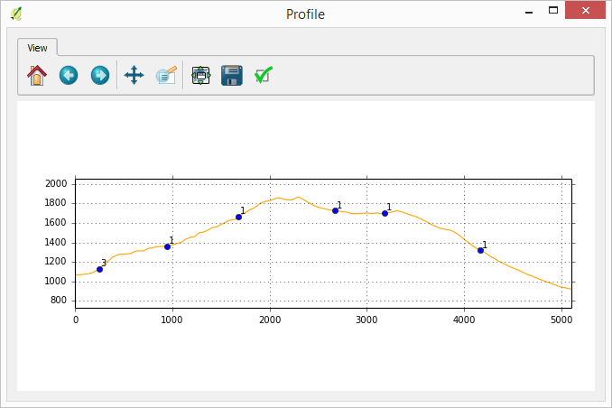
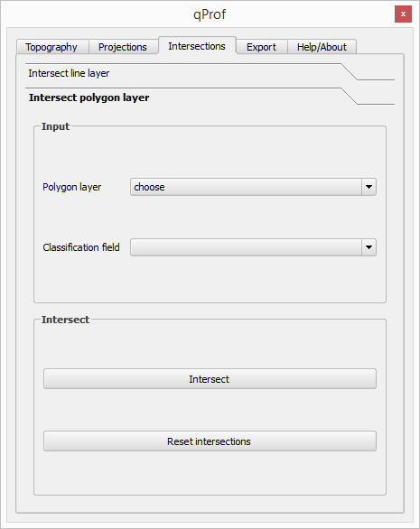
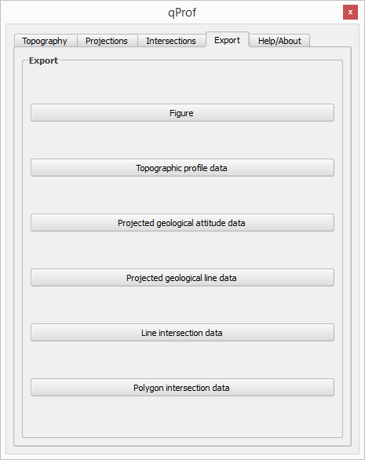

qProf plugin help
The purpose of this plugin is to help create geological profiles. Georeferenced data describing topography, geological outcrops and attitudes can be used.
This plugin was realized by M. Alberti (
www.malg.eu) and M. Zanieri.
The original concept is by M. Zanieri, while the implementation is by M. Alberti.
Some people contributed with their suggestions and testing, among them we want to thank S. Peduzzi, for his vigorous testing.
A few posts describing the plugin are:
In Italian:
In English:
In French:
1. General workflow
To construct a geological profile, the first step consists in the construction of a topographic profile, with input data
represented by one or more DEMs.
Subsequently, we process geological data, expressed by point, line or polygon layers with useful
geological attributes stored in the their attribute tables.
The subsequent processings can be:
- the projection of geological attitudes on the profile section;
- the projection of geological lines;
- the intersection of geological lines (e.g., faults) on the profile section;
- the intersection of geological polygonal elements (e.g., outcrops) on the profile section.
Last step is the export of the produced datasets as graphics and/or GIS data, for further elaborations in graphic or
geological software.
2. Topographic profile creation
It is possible to create a topographic profile in two ways:
- from one or more DEMs and a line element, digitized or stored in a layer;
- directly from a GPX file storing track points.
In the former case, data sources can be projected in different CRS, while the
created profile will be
in the project CRS.
In the latter case, i.e. when creating a profile from a GPX file, the original latitude-longitude values are automatically converted
to cartesian metric values, and from those the topographic profile is constructed.
2.1 Topographic profile creation from DEM(s)

Fig. 1. The plugin interface for topographic profile creation from DEM(s).
It is possible to calculate the profile elevation statistics, that can be used as a help in the definition of the
profile plot minimum and maximum elevations. Otherwise, automatic values will be applied.
When directly digitizing a line in the map, you add points wtih left clicks, and stops a line with a right click.
When using a line layer, multiple lines will be merged into a single line, based on the
chosen order field when available, or otherwise based on the internal line order.
Some artifacts in derived profiles can be due to erroneous line ordering, not corrected by
defining an order in an integer field (order values start from 1).
When calculating a profile from DEM, you may define the 'Line densify distance',
i.e. the distance between consecutive sampling point automatically added
when the original vertices of the used path are distanced more than this value.
It is suggested to use a value comparable to the resolution of the used DEM,
for instance 30 m for Aster DEMs. A suggested value is added automatically based on the resolution
of the DEM with the highest spatial resolution.
br />The profile can be swap around the horizontal (x) axis or on the profile line.
After having calculated the profile, you can plot its elevations and slopes (as degrees), absolute or relative,
and save the results as a csv file, a 2D point shapefile or a 3D line shapefile.

Fig. 2. Topographic profile extracted in the eastern border of Mt. Alpi zone (southern Italy).
2.2 Topographic profile creation from GPX

Fig. 3. The plugin interface for topographic profile creation from GPX files.
3. Geological element projections on the profile
Having defined and calculated a profile as previously described,
it is also possible to project geological attitudes or traces on the section.
3.1 Projection of geological attitudes
The geological attitudes source is a point layer: just selected points will be projected,
unless, in case of no selection, all points will be projected.

Fig. 4. The plugin interface for geological attitude projections on the profile.
Required fields are the geological point id and its surface orientation, expressed by dip direction and
dip angle values.
The geological attitudes can be projected on the section plane according to three
methods: 1) nearest point; 2) projection along a common axis; 3) projection along individual
axes, for each geological record.
When choosing the Along axis projection - individual axes option, trend and plunge fields,
storing the fold axis values along which to project each observation, are required in the source point layer.
The results can be exported both as a csv file or as a 3D point shapefile.

Fig. 5. Example of geological attitudes projection on a profile in the Mt. Alpi zone (Basilicata, Southern Italy).
3.2 Projection of geological lines
Geological traces can be projected on the section plane, based on a fold axis for which
trend and plunge values have to be defined.

Fig. 6. The plugin interface for geological lines projections on the profile.

Fig. 7. Example of geological line projections on a profile in the Mt. Alpi zone (Basilicata, Southern Italy).
4. Intersections of geological elements
It is possible to determine the intersections of the profile (composed by just two points) with lines ("Intersect line layer")
or with polygons ("Intersect polygon layer"), representing geological features.
An Id field and a Classification field can be provided, as an aid in plot visualization.
4.1 Intersection of line elements

Fig. 8. The plugin interface for intersection of line elements.

Fig. 9. Example of geological line intersection on a profile in the Mt. Alpi zone (Basilicata, Southern Italy).
4.2 Intersection of polygon elements

Fig. 10. The plugin interface for intersection of polygon elements.

Fig. 11. Example of geological polygon intersection on a profile in the Mt. Alpi zone (Basilicata, Southern Italy).
5. Result export
The last created figure can be saved as PDF, svg or tif. The export graphic parameters can
be saved in a text file and loaded for applying them to further plots.
Result data can be exported ad shapefiles or csv files. Depending on the data type,
the output geometric formats can be line or point. The exported data CRS will be the same CRS defined for
the QGis project.

Fig. 12. The plugin interface for result export.
Note: the slope is saved as relative (positive when upward, negative when downward), even if plotted as absolute. To change to aboslute value,
apply the absolute function on the relative field in a GIS or spreadsheet software.